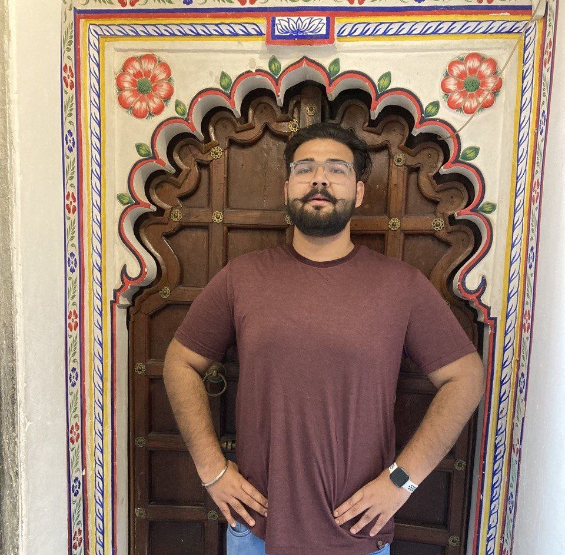

Kartik Chopra
Go-Getter, People Persone, Co-founder of Vibin, Data Entusist, Driving to become a product manager
👉 kartik.chopra8@gmail.com
Tech stack
HTML, CSS, JavaScript
MS Office 365, Excel, SQL, Python, Tableau
Trello, Adobe XD, Figma,
WordPress, Adobe Photoshop
Product Road map,
Product strategy
Data Cleaning, Data-Visualization
Business Development, Customer service
Education
B.E. COMPUTER SCIENCE ENGINEERING | CHITKARA UNIVERSITY
2016-2020
Coursework: Computer Networking, Client-Side technologies, Database Management System,
Operating System, Software Engineering, Full Stack Development
Work History
🚧 Co-Founder | SHOR IN CITY PVT. LTD. | VIBIN
2022- 2023
Bootstrapped startup which extends streaming of music to sharing while connecting business, brands and artist through playlist
- Engaged in all aspects of business development, including product design, market research, finance, and marketing. Additionally, I worked to streamline operations, which led to a 50% reduction in development time
- Formulated the company's vision, goals, and objectives and Leaded a team of 6
- Accorded Indian government DPITT startup recognition as an upcoming startup
Technologies worked on:
SQL, selenium and Appium testing, Jira, Trello, Figma, adobe XD, Photoshop, Firebase, Google
analytics, SEO and SME, Webhosting and C-panel
🚧 Associate Product Support Specialist | EDIFECS INC.
2020-2021
Successfully provided technical support to 8 enterprise clients related to technical and operational aspects of the products, including troubleshooting, CRM system updates and support case acknowledgements
- Reverse-engineered a product, streamlined its adoption across internal stakeholders, and successfully brought an old product back to life, benefiting over 100,000 users.
- Collaborated with multiple teams to resolve customer technical issues and executed testing of new implementations in production environment
Technologies worked on:
Restful API’s, SQL, EDI system, Active MQ webservices, SOAP UI, Citrix, Bug zilla, Postman and
HIPAA Compliance.